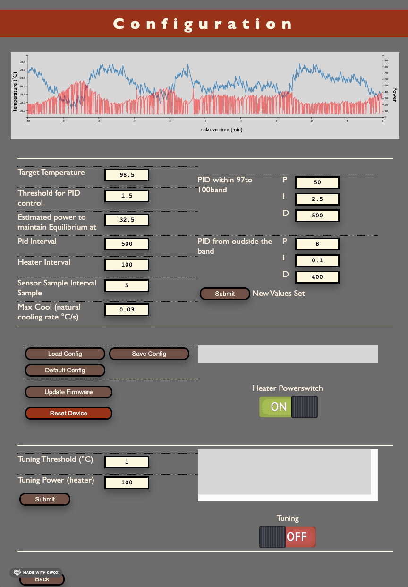
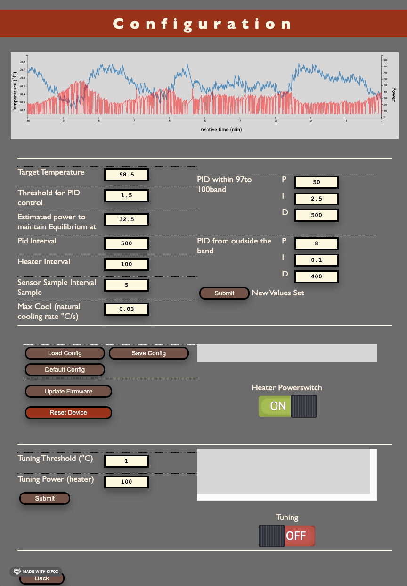
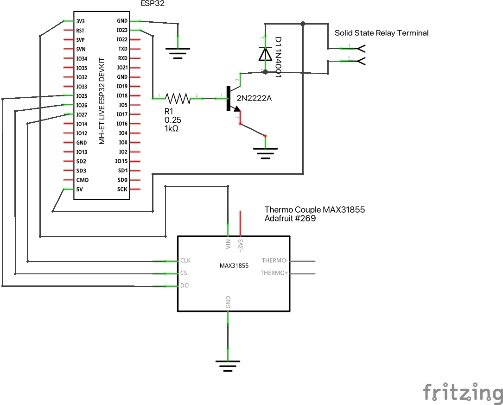

Overview
The project covers somewhat advances features for an espresso machine temperature controller. The basic idea was to have reproducible "espresso results" due to temperature regulation and being able to fine-tune. Especially small machines have a low heat capacity and quality suffers a lot from different heat-up-times and high hysteresis in standard temperature switches. This fork was specifically developed for a Rancilio Silvia (v1) which are known to have fluctuations up to 20 degrees Celcius.
With this project you should be able to install a PID for about 30 Euro of material, some soldering, uploading the firmware, and installling the hardware.
Interface
 

The homepage presents a simple temperature gauge, a power indicator, and the ability to turn the heater on or off. The configuration page contains all that is needed for setting the various parameters that control the temperature. It contains a graph that presents the last 10 minutes of data so you see what the impact is of your tuning. When the page is loaded it initiates its buffer with a few minutes of data from board. Setting the parameters us done using a username and password (currently a value set at compilation time).
Most of the interaction with the ESP32Machine is done via an restful API. All parameters can be set or read through it. In addition there is an MQTT interface that is used to publish the machines's current status.
The screenshoots will give you an idea how things look.
Buid Background
Software
This project refactored from the original ESPressIoT project by Roman Schmit originally written for an ESP3866 board with a TSIC sensor.
This fork ports that code to an ESP32 with a MAX31855 amplified K thermocouple. It has been refactored it to be more object oriented and graphically more appealing. It has some small optimisations to deal with measurement noise and ones that allow for marginally faster convergence. Overal the temperature stability is about 0.2 degrees centrigrade.
For development I used platformIO on Visual Studio Code MAX. The toolchain relies on having MinifyAll installed.
The code relies on the following libraries:
- Arduino-PID-Library v1
- ArduinoJSON v6
- Adafruit-MAX31855
- ArduinoStreamUtils
- PubSubClient
- ESPAsyncWebServer(Currently we are using this fork, as the original code has stability issues in the event handling
Hardware
For the hardware setup I followed the example from "Bnayalivne's Instructable page" I used a splitter to solder a USB charger to. And the whole circuit I installed in the space behind the frontplate, in a small plastic bag keep it dry from the drip plate.
Whilst the Fotek should be able to handle the 3.3 V output from the GPIO it failed doing so. The small circuit with the transistor, resistor, and the diode (against flowback) uses the GPIO defined in heater.ino to switch the output from the 5v voltage pin.
Acknowledgements
Roman Schmit, some of the code is a literal copy of his, some of it is butchered. All good idea's are his, the errors introduced are mine.
The webpages uses, borrows, or was inspired by the gauge.min.js library ; button.css by Ashley Watson-Nolan from htps://codepen.io/ashleynolan/pen/wBppKzt; the D3j library and the many examples from its community such as Brendan Sudol's way to make a graph responsive.
Another project that may be of your interest is Medlor's Bleeding Edge